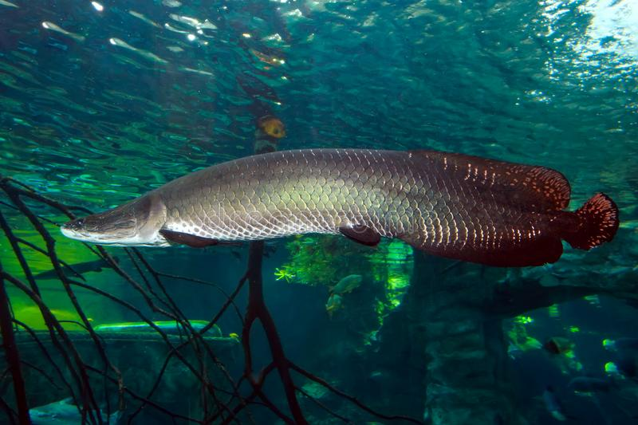
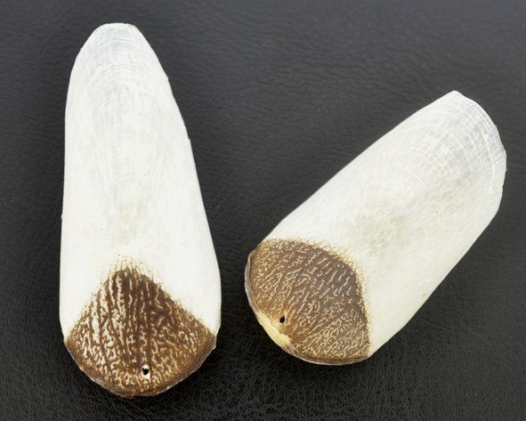
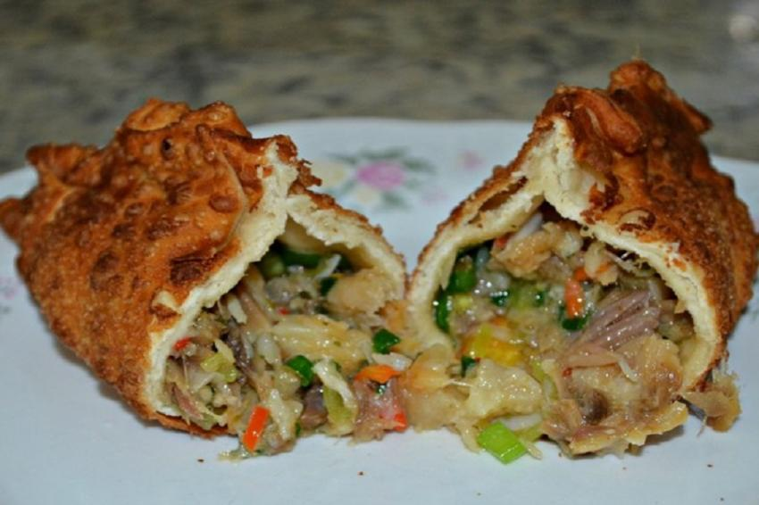

Pirarucu
Caracteristicas
Esta espécie de peixe possui características biológicas e ecológicas bem distintas: De grande porte, sua cabeça é achatada e ossificada, com um corpo alongado e escamoso. Pode crescer até três metros de comprimento e pesar cerca de 250 kg, possui dois aparelhos respiratórios, as brânquias, para a respiração aquática e a bexiga natatória modificada, especializada para funcionar como pulmão, no exercício da respiração aérea, obrigatória principalmente durante a seca, ocasião em que os peixes formam casais, procuram ambientes calmos e preparam seus ninhos, reproduzindo durante a enchente; é papel do macho proteger a prole por cerca de seis meses. Os filhotes apresentam hábito gregário, e durante as primeiras semanas de vida, nadam sempre em torno da cabeça do pai, que os mantém próximos à superficie, facilitando-lhes o exercício da respiração aérea.
Apesar de ser uma espécie resistente, suas características ecológicas e biológicas o tornam bastante vulnerável à ação de pescadores. Os cuidados com os ninhos, após a desova expõe os reprodutores à fácil captura com redes de pesca ou arpão. Durante o longo período de cuidados paternais, a necessidade fisiológica de emergir para respirar ocorre em intervalos menores, ocasião em que os peixes são pescados. O abate dos machos nestas circunstâncias e também a longa fase de imaturidade sexual dos filhotes, conhecidos como "bodecos" onde seu peso varia entre 30 e 40 quilos, propicia a captura destes por predadores naturais como as piranhas, fazendo assim com que o sucesso reprodutivo da espécie seja diminuído.
Fósseis de pirarucus ou de uma outra espécie irmã desconhecida de 13 milhões de anos foram encontrados na colômbia, datando do período Mioceno onde a espécie provavelmente era mais populosa naturalmente além da atual Amazonia
Escamas e Barbatanas
As escamas são compostas por camadas internas de correias flexíveis imprensadas entre as camadas externas de plástico rígido. Em peixes, as escalas são limitadas pelo colágeno no nível atômico; eles desenvolvem juntos, tecendo em uma única peça sólida. Ao contrário de qualquer outra espécie de peixe, as camadas de colágeno nas escamas de Arapaima são tão grossas quanto um grão de arroz. As escamas de Arapaima foram adaptadas para impedir a penetração de mordidas de piranha.
O Pirarucu não apresenta dimorfismo sexual externo, salvo quando em época de reprodução, que apresenta diferenças nas colorações de suas escamas.
Na culinaria reginal
O pirarucu é servido como componente principal em diversos pratos típicos do Amazonas e do Pará. Um desses pratos é o "Pirarucu à casaca" que é bastante servido em festejos juninos.[4] Sua carne é bastante apreciada no estado, onde é bastante requisitada. Além disso, partes de seu corpo, como sua escama, eram utilizadas no passado como lixas para unhas e outras utilidades.
Na mitologia indigena
Segundo a mitologia indígena difundida na Amazônia, Pirarucu teria se originado do disformismo de um índio que pertencia a tribo dos uaiás (não sendo um consenso), que habitara as planícies da Amazônia. Ele seria um bravo guerreiro, que tinha um coração perverso, mesmo sendo filho de Pindarô, um homem de bom coração e também chefe da tribo.
O índio era cheio de vaidades, egoísmo e excessivamente orgulhoso de seu poder. Um dia, enquanto seu pai fazia uma visita amigável a tribos vizinhas, Pirarucu se aproveitou da ocasião para tomar como refém índios da aldeia e executá-los sem nenhum motivo. Pirarucu também adorava insultar os deuses.
Tupã, o deus dos deuses, observou Pirarucu por um longo tempo, até que cansado daquele comportamento decidiu punir Pirarucu. Tupã chamou Polo e ordenou que ele espalhasse seu mais poderoso relâmpago na área inteira. Ele também chamou Iururaruaçu, a deusa das torrentes, e ordenou que ela provocasse as mais fortes torrentes de chuva sobre Pirarucu, que estava pescando com outros índios as margens do rio Tocantins (sem consenso), não muito longe da aldeia.
O fogo de Tupã foi visto por toda a floresta. Quando Pirarucu percebeu as ondas furiosas do rio e ouviu a voz enraivecida de Tupã, ele somente as ignorou com uma risada e palavras de desprezo. Então Tupã enviou Chandoré, para atirar relâmpagos e trovões sobre Pirarucu, enchendo o ar de luz. Pirarucu tentou escapar, mas enquanto ele corria por entre os galhos das árvores, um relâmpago fulminante enviado por Chandoré, acertou o coração do guerreiro que mesmo assim ainda se recusou a pedir perdão.
Todos aqueles que se encontravam com Pirarucu correram para a selva terrivelmente assustados, enquanto o corpo de Pirarucu, ainda vivo, foi levado para as profundezas do rio Tocantins e transformado em um gigante e escuro peixe. Pirarucu desapareceu nas águas e nunca mais retornou, mas por um longo tempo foi o terror da região.